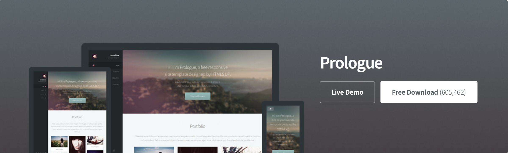
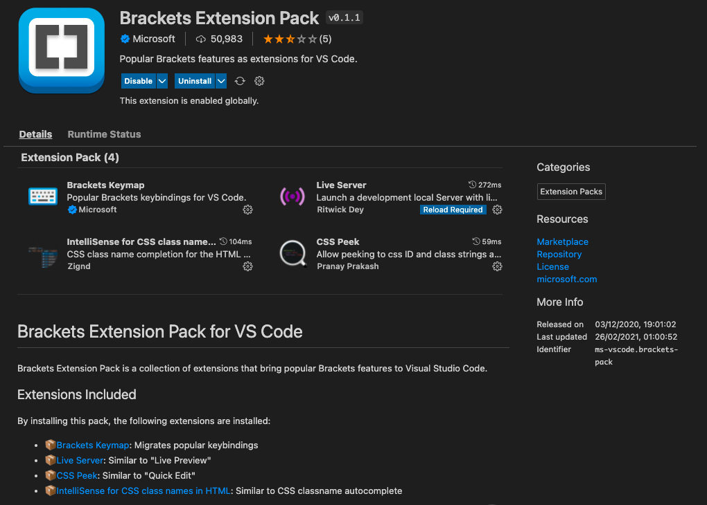

Welcome to project 1: Making a Website
The goal
The goal of this project is to make a simple website using HTML that will serve as a platform for future projects in the course VÉL608G. There are many ways to go about this but here I will describe the process I followed to create this website.
Create a Github account
The first step is to create a GitHub account. If you already have an account you can skip this step.
Download or create your own HTML template
Next we will download a HTML template from HTML5UP.

The theme I used is called Prologue
Upload the HTML template a Github repository
Next move the folder with the downloaded template to a good place on your computer. Then open the command line (called terminal on mac os) and change the working directory to the folder containing the template. This can be done with the command cd.
~/ cd PATH/VEL608G
Next we use git from the command line to create a repository and commit all the files to the new
repository.
If you have never done this before you may have to sign in. In short a repository contains all of
your project's files and each file's revision history.
For more information on repositories click here.
~/Documents/Github/VEL608G git init
~/Documents/Github/VEL608G git add .
~/Documents/Github/VEL608G git commit -m "initial commit"
~/Documents/Github/VEL608G git push
Here we are first creating a new repository, then adding all the files in the current working
directory to the queue, commiting them to the repository with a commit message,
and finally pushing the update to the main branch. To learn more about working with a GitHub
repository in the command line then take a look at LINK
We can now open our account on GitHub and we should see the repository that we just created with the files from the HTML template.
Set up GitHub Pages
Next, on GitHub, go to settings and under settings find pages.
Here we will set the branch to main and the source folder to /root. In a about a minute we can
open this url and we should see our template.
Open the folder in a code editor
We now need to open the folder in a code editor so we can start work on our website. My editor of choice is VSCode but there are plenty of other editors to choose from.
Here we can see some files and some folders.
- index.html - This is our websites homepage and the centrepiece of our project
- /assets - Is a folder that contains all our stylesheets and the place where we should look to customise the appearance of our website
- /images - Is a folder where we will keep all the images that we be on our website.
Note: I have added some files so the file structure has slightly changed since I downloaded the template
Local server
It is very useful to have a local server on your machine to be able to see your website change live as you make edits. VSCode has many extensions that can help us out but the one I recommend is Brackets Extention Pack.

Once we install the extention we can see the website change as we are editing the HTML files.
Next steps
Since we are just editing static html pages we have alot of work ahead of us writing text, resizing images but adding css components and adding links between pages.
Tips and tricks
- Use a WYSIWYG editor for example: CKEditor
- Look for VSCode extensions that make your life easier
- Learn the basic HTML tags (div,p,h1,h2,h3,br,a,...)
- Commit to Git regularly so when you mess up your site you can recover it
- If files are cluttering up your repo then add them to .gitignore and then Git will skip them